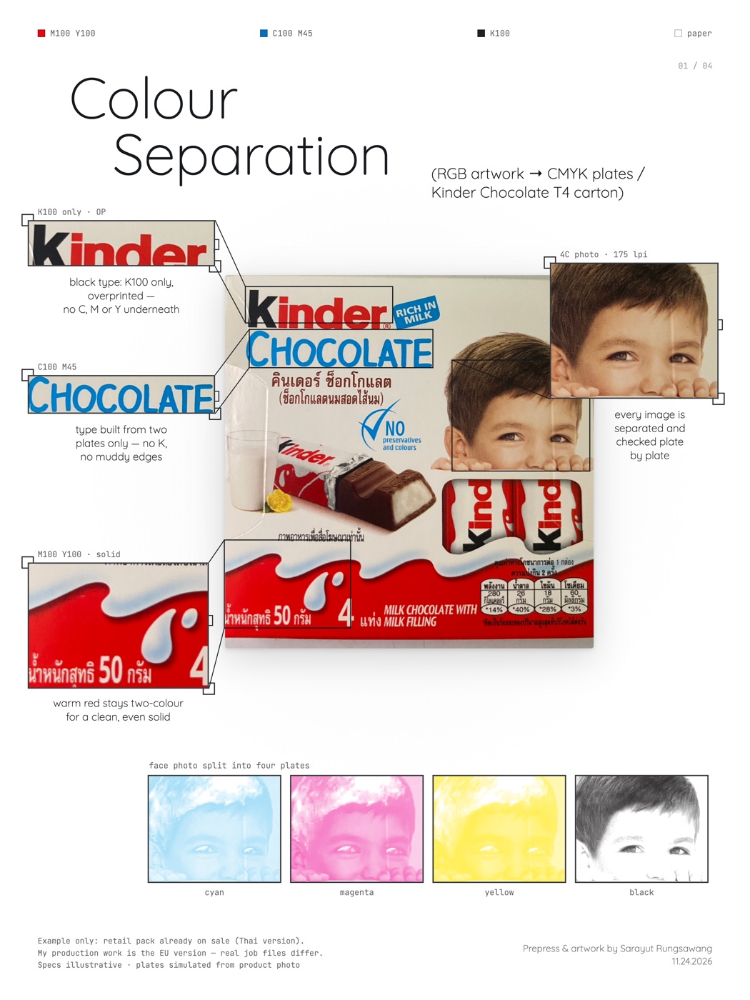
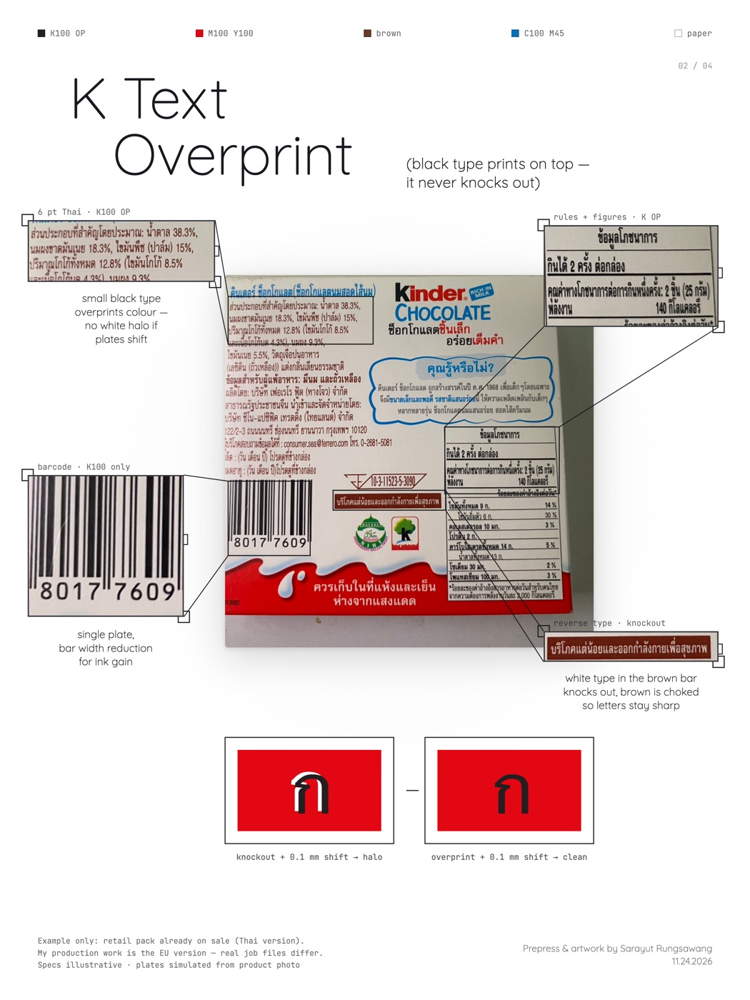
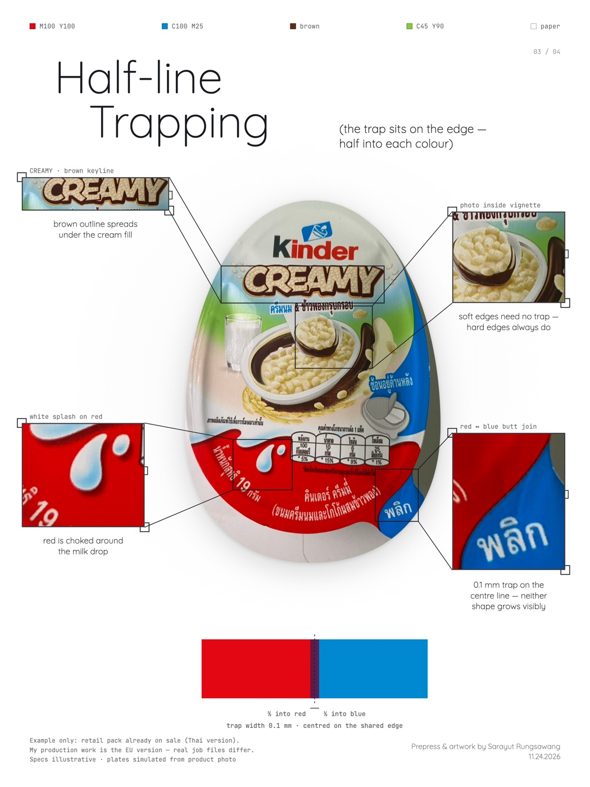
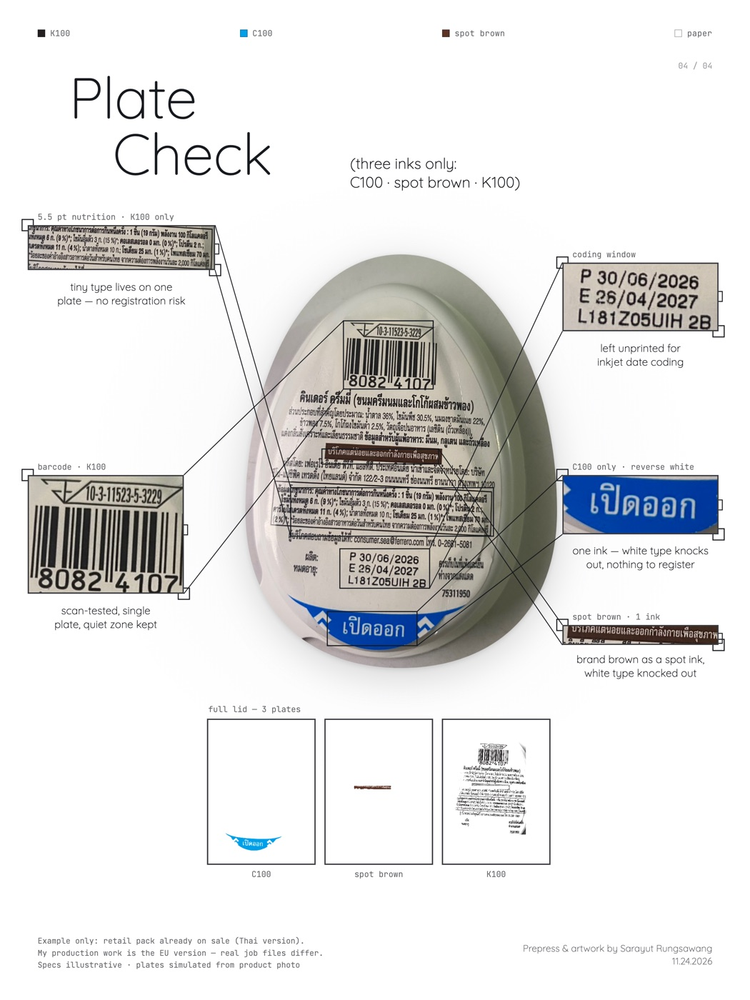

Sarayut Rungsawang
Graphic Designer · Food Packaging · POSM & Online
Four boards on confectionery packs. Each one shows a file or print decision I make before artwork goes to the printer, and where it sits on the pack.
Example only. These are retail packs already on sale (Thai version), used to explain the techniques. My production work is on the EU version of this packaging, so the real job files differ.
What I check before a file goes to the printer
- Text against the customer's copy, in Thai and English
- Dimensions and dieline against the spec
- Black text on K100 only; two-ink solids kept clean
- Overprint and knockout settings on every object
- Trap direction and width on hard colour edges
- Barcode on a single plate, quiet zone kept
- Size, resolution, colour mode, bleed and safe area
- Final PDF compared against the last approved proof
Khon Kaen, Thailand · open to relocating to Bangkok
+66 96 684 5125 · r.sarayut.w@gmail.com
+66 96 684 5125 · r.sarayut.w@gmail.com
01 / 04
Colour separation
Photo split into four plates; black type on K100 only; solid red kept to two inks for an even solid.

02 / 04
K text overprint
Small black type prints on top of colour, so a plate shift never leaves a white halo. Barcode on one plate only.

03 / 04
Half-line trapping
Traps sit on the shared edge, half into each colour, so neither shape grows visibly.

04 / 04
Plate check
The lid prints in three inks only: C100, a spot brown and K100. Each is checked on its own plate; the date-code window stays clear.

Plate previews on the boards are simulated from product photos to explain each technique.